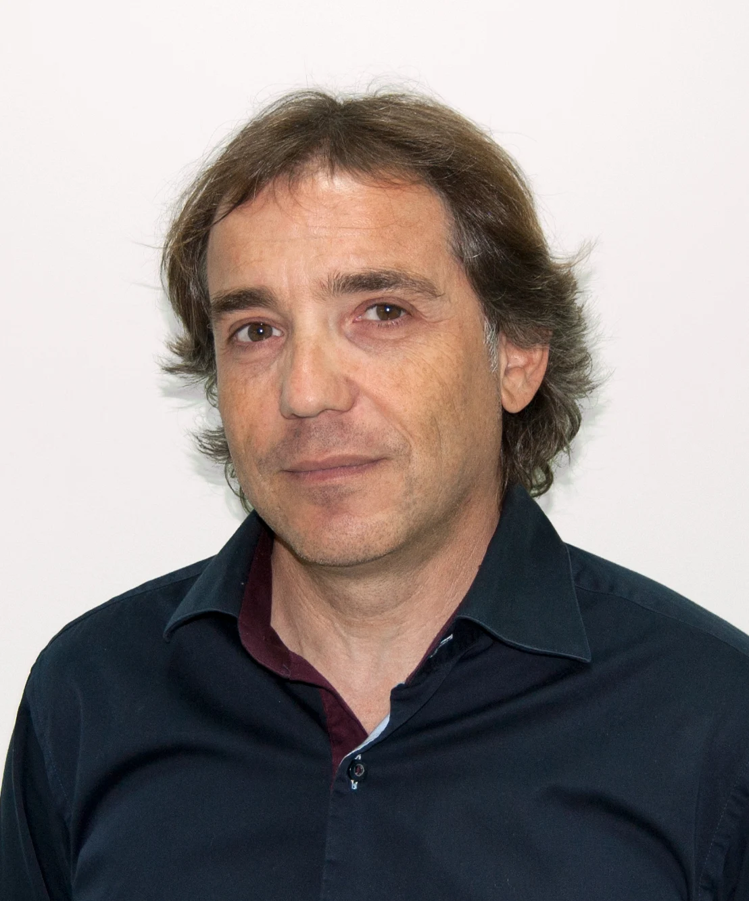

CURRÍCULO PROFESIONAL
Paco Yubarta
Instructor y formador de buceo técnico
Madrid, España · +34 607 294 846
info@alproblema.com

Perfil profesional
Instructor y formador con una trayectoria iniciada en FEDAS en 1992. Formación en buceo técnico y exploración en España, Estados Unidos y México. Experiencia en buceo recreativo, cuevas, inmersiones profundas y bajo hielo, así como en formación de equipos y coordinación de operaciones subacuáticas.
Experiencia y actividad
- Formación específica de cuerpos y fuerzas de seguridad, incluyendo el GEAS de la Guardia Civil y el GEO de la Policía Nacional, en actividades subacuáticas, salvamento, rescate y buceo técnico.
- Dirección de operaciones y coordinación logística de eventos del sector acuático y subacuático.
- Colaboraciones con producciones de cine y televisión en asesoramiento, operaciones y formación de actores y participantes.
- Dirección de la feria More Aqua Show (MAS), documentada en entrevistas de 2018 y 2019.
Hitos formativos y profesionales
1992. Inicio de la formación en la Federación Española de Actividades Subacuáticas (FEDAS).
2009. Fundación de DIR Madrid, organización sin ánimo de lucro dedicada a difundir el buceo técnico y sus protocolos mediante talleres y seminarios.
2011. Técnico Deportivo de Buceo de nivel II con la Federación Madrileña de Actividades Subacuáticas.
Formación y acreditaciones
IANTD — Instructor Trainer · IT 715
- Open Water y Advanced Open Water Instructor Trainer
- Rescue Instructor Trainer
- Essentials Diver Instructor Trainer
- Nitrox y Advanced Nitrox Instructor Trainer
- Advanced Recreational Trimix Instructor Trainer
- Sidemount Instructor Trainer
- Blender Instructor
- Full Cave Instructor Trainer
- Trimix Instructor Trainer
FEDAS — Instructor 1★ Nivel 2 · 2★★
- Nitrox y Nitrox avanzado
- Administración de oxígeno y soporte vital básico
- Buceo nocturno y traje seco
- Buceo bajo hielo y profundo
- Salvamento y rescate
- Introtec y Trimix
SSI — Master Instructor
- Open Water y Advanced Open Water Instructor
- First Aid and Oxygen Instructor
- Specialty Instructor y Divecon Instructor
- Advanced Nitrox Instructor
- Technical Foundations Instructor
- Normoxic Trimix Instructor
- Advanced Decompression Procedures Instructor
Referencias públicas
podcastdebuceo, episodio 9 — Especial feria MAS (29/03/2019).
Resumen elaborado a partir del currículo profesional facilitado y las referencias públicas indicadas. Titulaciones según el currículo de origen.